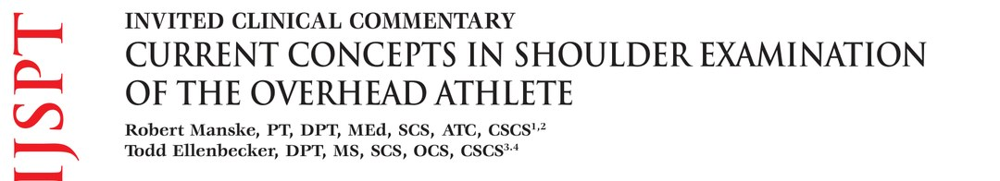
🔖原文首页（IJSPT 2013 年第 8 卷第 5 期）
📚 文献卡片
▪ 英文原题：Current Concepts in Shoulder Examination of the Overhead Athlete（过头运动员肩关节检查的最新概念）
▪ 作者：Robert Manske, PT, DPT, MEd, SCS, ATC, CSCS · Todd Ellenbecker, DPT, MS, SCS, OCS, CSCS
▪ 机构：美国威奇托州立大学物理治疗系 · Via Christi 运动骨科物理治疗 · Physiotherapy Associates（斯科茨代尔）· ATP 世界巡回赛医疗服务
▪ 期刊：International Journal of Sports Physical Therapy（IJSPT）
▪ 年卷期：2013;8(5):554-578
▪ PMCID：PMC3811732
▪ 文章类型：特邀临床评论（Invited Clinical Commentary）
▪ 证据级别：原文标注 Level 5（专家意见）
▪ 关键词：Overhead athlete · physical examination · shoulder
投球、发球、扣杀时，下肢和躯干产生的能量都要经过肩关节复合体传到手上。投球时肩关节的角速度超过每秒 7000°，几乎逼近了解剖的极限。
作者总结了肩关节难查的四个原因：
• 关节多：盂肱、肩胛胸壁、肩锁、胸锁四个关节一起参与
• 软组织层层包裹，很难准确触诊到某一个结构
• 很多常用的特殊检查，准确性没有想象中那么高
• 过度依赖影像，体格检查成了一门“失传的手艺”
"The over-reliance of imaging is concerning since it is known that up to 34% of painless shoulders will demonstrate a rotator cuff (RC) tear on magnetic resonance imaging (MRI)."
"过度依赖影像令人担忧，因为已知多达 34% 的无痛肩关节在 MRI 上能看到肩袖撕裂。"
• 无症状的职业棒球投手中，79% 有盂唇异常
• 在投掷或过头运动员中，MRI 漏诊肩袖部分撕裂的比例可高达 44%
• 过头运动员的优势肩中，40% 有肩袖部分或全层撕裂的表现，25% 有 Bennett 病变，而这些人在检查时和之后 5 年内都没有症状
影像上的“异常”不等于疼痛的来源。这篇文章要做的，就是把过头运动员肩关节检查的完整流程，从问诊到特殊检查，系统地梳理一遍。
| 步骤 | 核心内容 | 关键要点 |
|---|---|---|
| ① 问诊 | 受伤方式、疼痛出现在哪个动作阶段 | 排除颈椎问题（Spurling 试验） |
| ② 观察 | 姿势、优势侧肩低、肌萎缩 | 双手叉腰位最好观察 |
| ③ 活动度 | 90° 外展位测内外旋 | 看总旋转活动度（TROM），不只看内旋缺失（GIRD） |
| ④ 肌力 | 徒手肌力测试，固定肩胛 | 疼痛和姿势会影响结果 |
| ⑤ 肩胛 | Kibler 运动障碍分型 + 4 个肩胛试验 | 离心（放下）阶段最容易暴露问题 |
| ⑥ 本体感觉 | 关节位置觉 | 疲劳会降低本体感觉 |
| ⑦ 特殊检查 | 撞击、不稳、肩袖、盂唇 | 单个试验不够准，要组合使用 |
一句话记住：流程固定、双侧对比、多试验组合，才能少漏诊。
"Skilled medical clinicians understand that in most cases diagnosis of any musculoskeletal problem can be made accurately through effective questioning and listening to the athlete."
"有经验的临床医生都明白，大多数情况下，通过有效的提问和倾听，就能准确诊断肌肉骨骼问题。"
过头运动员问诊问题（原文表 1 中文全译）：
• 疼痛是外伤后出现的，还是慢慢出现的？
• 有没有过度使用史？
• 运动中哪个时候痛？（投球或发球的哪个阶段？）
• 肩关节有不稳的感觉吗？
• 有没有弹响、卡住、交锁或咔哒声？
• 这些声音是伴随疼痛的，还是只有声音不痛？
• 上肢有没有颜色改变、肿胀或感觉丧失？
• 投球球速或挥拍速度有没有下降？
• 动作技术有没有改变？训练频率、时长或强度有没有变化？
对网球运动员，还要问球拍线的类型或磅数、球拍款式和重量、握拍方式有没有改变，这些都可能给肌肉骨骼系统带来很大影响。
"The Spurling test had a sensitivity of 30% and specificity of 93%."
"Spurling 试验的敏感度为 30%，特异度为 93%。"
它不敏感但特异：阳性可以帮助确认颈神经根病，阴性却不能排除。适合作为过头运动员检查中的筛查试验。
判断激惹程度：高激惹的肩疼痛明显、活动度和肌力都受限；低激惹的肩可能只在过头动作时痛。激惹程度决定接下来的检查怎么安排。过头运动员的症状多是慢慢出现的，常描述为“热不开身”、找不到球速或控球变差。
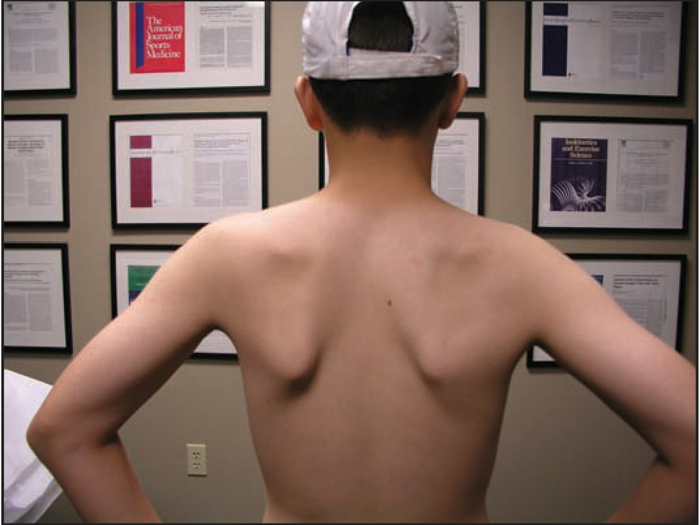
🔖图1：一名优秀青少年网球运动员的后面观（双手叉腰位）：优势侧（右）肩明显偏低，冈下肌萎缩，肩胛下角突出
• 头前伸：按外耳道与肩峰外侧端的距离，分为正常、轻度、中度、重度；过头运动员轻度头前伸并不少见
• 优势侧肩偏低：网球、棒球这类单侧运动很常见，可能与松弛增加、肌肉量和重量增加有关
• 双手叉腰位：肩外展约 45°、拇指向后放在髂嵴上，最容易看出肩袖和肩胛后侧肌群不对称、翼状肩胛或前倾
• 冈上窝 / 冈下窝萎缩：可能提示肩袖撕裂或肩胛上神经受累，即使症状很轻
"Most overhead athletes exhibit an excessive amount of external rotation (ER) and a decrease in internal rotation (IR) when measured from 90° of abduction."
"在 90° 外展位测量时，大多数过头运动员表现为外旋过多、内旋减少。"
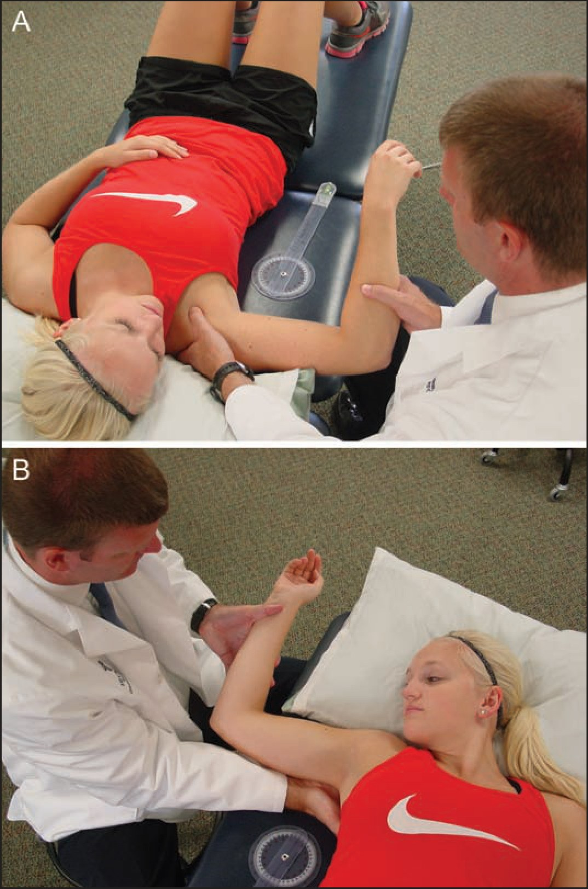
🔖图2：单纯盂肱关节活动度测量：A 内旋，触诊喙突以感知肩胛开始运动；B 外旋，触诊肩胛以感知运动
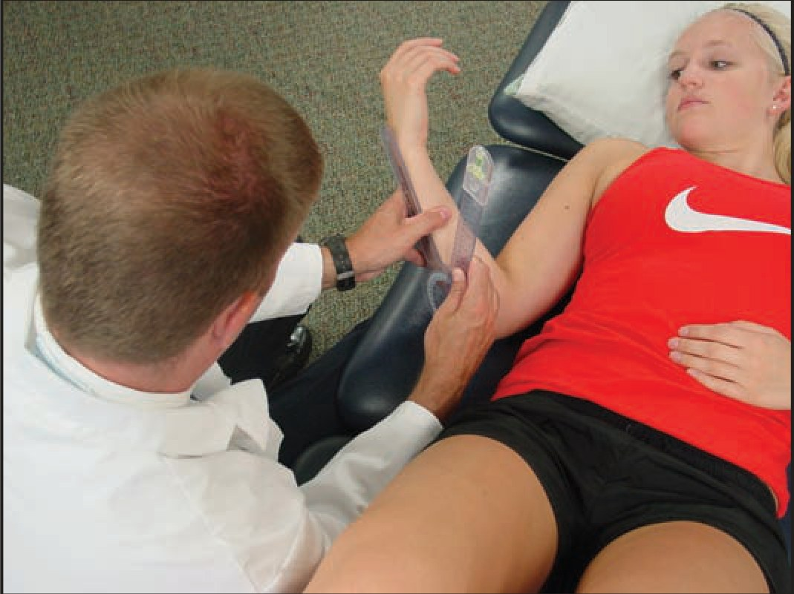
🔖图3：上臂 0° 外展位测量肩外旋
测量要点：仰卧、肩外展 90°，用“C”形手法固定肩胛（拇指在喙突、其余手指在肩胛后方），一感觉到肩胛动就停，读量角器。这是 Wilk 等比较三种方法后最可靠的一种。另外也要测上臂在体侧（0° 外展）时的旋转。
• 量角器的组内信度好、组间信度一般，准确度大约只能到 5°
• 372 名职业棒球运动员被动外旋平均 129°、内旋 61°
• 优势侧内旋少 7°、外旋多 7°，所以总旋转活动度（TROM＝内旋＋外旋）双侧对称
| 概念 | 定义 |
|---|---|
| GIRD（盂肱内旋缺失） | 优势侧内旋比对侧少 20° 或 25° 以上；或 TROM 少 10%；Kibler 定义为双侧内旋差 >18° |
| 解剖性 GIRD（aGIRD） | 内旋减少，但外旋相应增加，TROM 与健侧相差 ≤5°，属于正常适应 |
| 病理性 GIRD（pGIRD） | 内旋减少，同时 TROM 比健侧少 >5°，或外旋增加不足 |
| ERD（外旋不足） | 投球侧与非投球侧的外旋差 <5°，说明外旋增加不足以承受投球应力 |
"Wilk et al found that pitchers whose TROM arc was limited 5 degrees or more than the uninvolved side exhibited 2.5 times greater risk of sustaining a shoulder injury."
"Wilk 等发现，TROM 比健侧少 5° 或以上的投手，肩关节受伤风险高 2.5 倍。"
⚠️关键提醒：TROM 双侧相等时，不建议做增加活动度的治疗，否则可能活动度过大，增加周围软组织和关节囊的负担。单纯的 GIRD 可以视为过头运动员的正常变异。
"It is very common for pain or apprehension to invalidate an athlete’s true strength measurements due to a reflexive inhibition of motor units in an inflamed or irritated muscle."
"疼痛或恐惧感常常让运动员的真实肌力测不准，因为发炎或受刺激的肌肉会出现运动单位的反射性抑制。"
• 肩胛位置要标准化：肩胛前伸或后缩时测肩袖，结果差别很大；也有研究认为中立位肌力最大
• “break”测试 vs “make”测试：break 是检查者施力，make 是患者主动发力；怀疑有疼痛时，break 从轻阻力开始，或改用 make
• 一定要触诊：确认测的是目标肌肉，尤其是怀疑胸长神经麻痹、胸廓出口综合征、肩胛上神经受累时
肩部徒手肌力测试方法（原文表 2 中文全译）：
| 肌肉 | 体位与方法 |
|---|---|
| 上斜方肌 / 肩胛提肌 | 坐位，颈椎同侧侧屈、对侧旋转。患者上提肩胛，检查者在肩峰远端施加向下的阻力 |
| 中斜方肌 | 俯卧，肩和上臂水平外展到中线，确保肩胛内收。阻力施于肱骨后方（向水平内收方向），或施于肩胛冈远端（向肩胛外展方向） |
| 下斜方肌 | 俯卧，肩和上臂上举到 135°，确保肩胛内收。阻力施于肱骨后方（向水平内收和伸展方向），或施于肩胛冈远端（向肩胛上提和外展方向） |
| 胸锁乳突肌 | 仰卧，颈椎屈曲并向对侧旋转。在额头施加阻力，方向为伸展和同侧旋转 |
| 前锯肌 | 坐位，肩前屈 100°。向伸展方向施加阻力，同时触摸肩胛有无翼状或前倾 |
| 菱形肌 | 俯卧，肩胛内收并下回旋。阻力施于肩胛冈后方，方向为外展和上回旋 |
| 胸小肌 | 仰卧，前伸肩胛。在肩前方施加阻力，方向为肩胛后缩 |
| 胸大肌胸骨部 | 仰卧，上臂在肩胛平面外展 135°（略带水平内收和伸展）。阻力施于肱骨远端，方向为前屈和水平外展 |
| 胸大肌锁骨部 | 仰卧，上臂在肩胛平面外展 60°（略带水平内收和前屈）。阻力施于肱骨远端，方向为伸展和水平外展 |
| 背阔肌 | 俯卧，上臂伸到中立位或轻度后伸并内收。阻力施于肱骨远端，方向为前屈和外展 |
| 肩胛下肌 / 大圆肌 | 坐位，肩中立旋转，屈肘 90°。阻力施于前臂远端内侧，方向为肩外旋 |
| 三角肌前束 | 坐位，肩前屈或肩胛平面上举。阻力施于肱骨远端，方向为伸展 |
| 三角肌中束 | 坐位，肩外展。阻力施于肱骨远端，方向为内收 |
| 三角肌后束 | 俯卧，肩水平外展到中立位。阻力施于肱骨远端，方向为水平内收 |
| 冈上肌 | 坐位，肩胛平面外展并内旋（空罐）或外旋（满罐）。阻力施于肱骨远端，对抗外展 |
| 冈下肌 / 小圆肌 | 坐位。冈下肌：肩中立旋转，屈肘 90°，阻力施于前臂远端外侧，方向为肩内旋。小圆肌：肩外展 90°、屈肘 90°，阻力相同 |
| 肱二头肌 | 坐位，屈肘并旋后。阻力施于前臂远端，方向为伸肘 |
| 肱三头肌 | 俯卧，肩外展 90°，前臂垂于床边。伸肘，阻力施于前臂远端，方向为屈肘 |
🔖注：原文说明，其中部分体位与教科书中的标准徒手肌力测试不同，是作者推荐的临床简易方法。
"Scapular dyskinesis has been defined as ‘an observable alteration of the position and motion of the scapula relative to the thoracic cage.’"
"肩胛运动障碍被定义为‘肩胛相对于胸廓的位置和运动出现可观察到的改变’。"
正常肩肱节律约为 2:1：上举时肱骨每动 2°，肩胛动 1°。下斜方肌和前锯肌在肩痛早期就很容易被抑制，从而出现运动障碍。
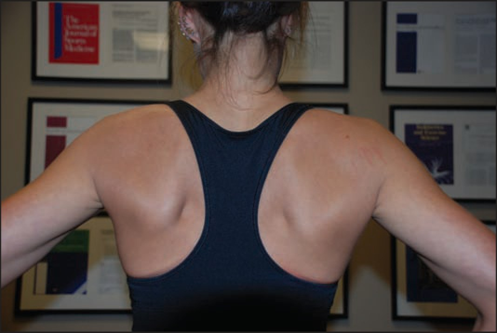
🔖图4：Kibler Ⅰ型：肩胛下角向背侧突出
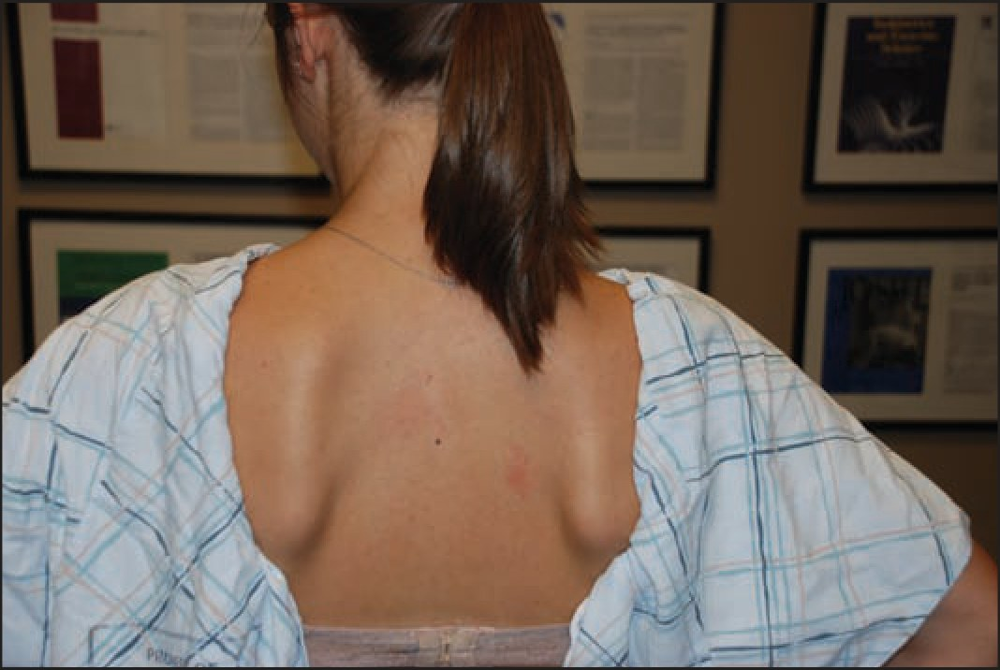
🔖图5：Kibler Ⅱ型：整个内侧缘向背侧突出
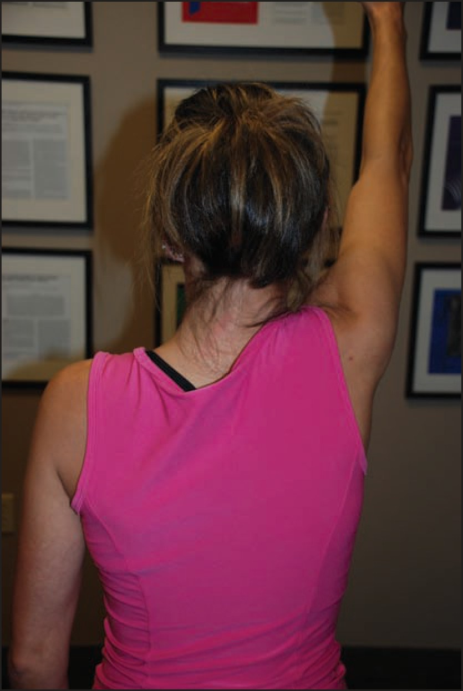
🔖图6：Kibler Ⅲ型：耸肩，肩胛上缘突出
| 分型 | 表现 | 运动平面 |
|---|---|---|
| Ⅰ型（下角型） | 肩胛下角突出，肩峰向前下倾 | 矢状面 |
| Ⅱ型（内侧缘型） | 整个内侧缘突出 | 水平面 |
| Ⅲ型（上缘型） | 用耸肩来启动动作，上缘突出 | — |
"Most often dyskinesis occurs during the lowering (eccentric) component of shoulder movement."
"运动障碍最常出现在肩关节放下（离心）的阶段。"
• 要同时看上举和放下，而且要做多次重复——有时重复几次后才出现，提示是耐力问题而不只是力量问题
• 作者认为临床上常常不止一种类型，比如Ⅰ型和Ⅱ型同时出现
• 肉眼观察的信度存在争议，最好多个平面一起看
| 试验 | 做法 | 阳性与意义 |
|---|---|---|
| Kibler 肩胛外滑试验 | 体侧、叉腰、上举 90° 三个体位，量胸椎棘突到肩胛下角的距离 | 双侧差 >1-1.5 cm 为异常；但信度和效度受到质疑 |
| 肩胛辅助试验 | 检查者辅助肩胛上回旋，患者主动上举 | 疼痛减轻或活动度增加；一致性 77%-91%（κ 0.53-0.62） |
| 肩胛后缩试验 | 检查者按压内侧缘使肩胛后缩，患者重复诱发症状的动作 | 症状减轻或力量增加；空罐试验肌力平均增加 24% |
| 翻转征 | 上臂在体侧抗阻外旋，观察肩胛内侧缘 | 内侧缘“翻”离胸廓，提示肩胛动态稳定不足 |
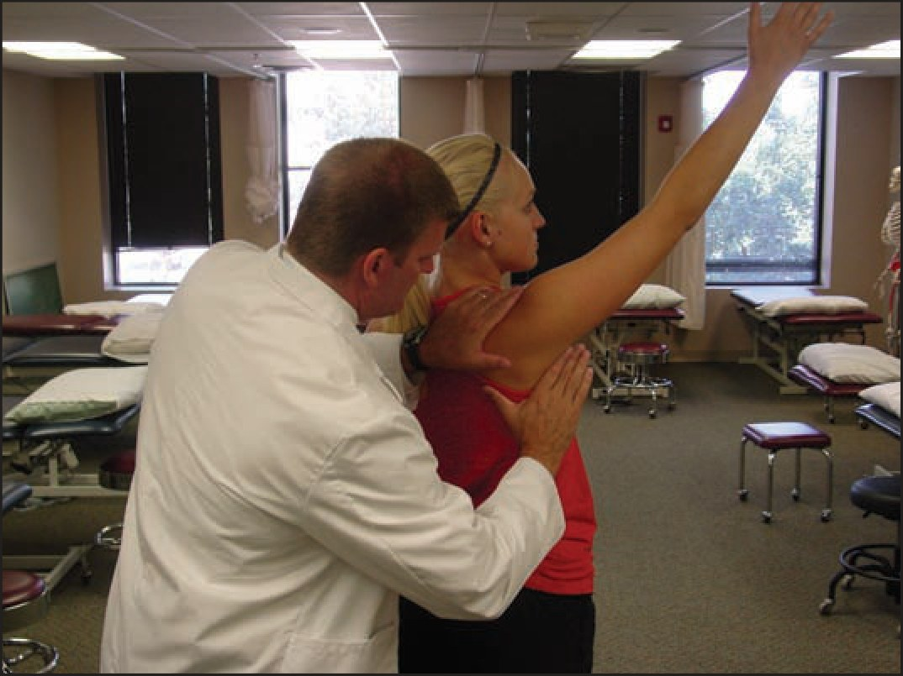
🔖图7：肩胛辅助试验
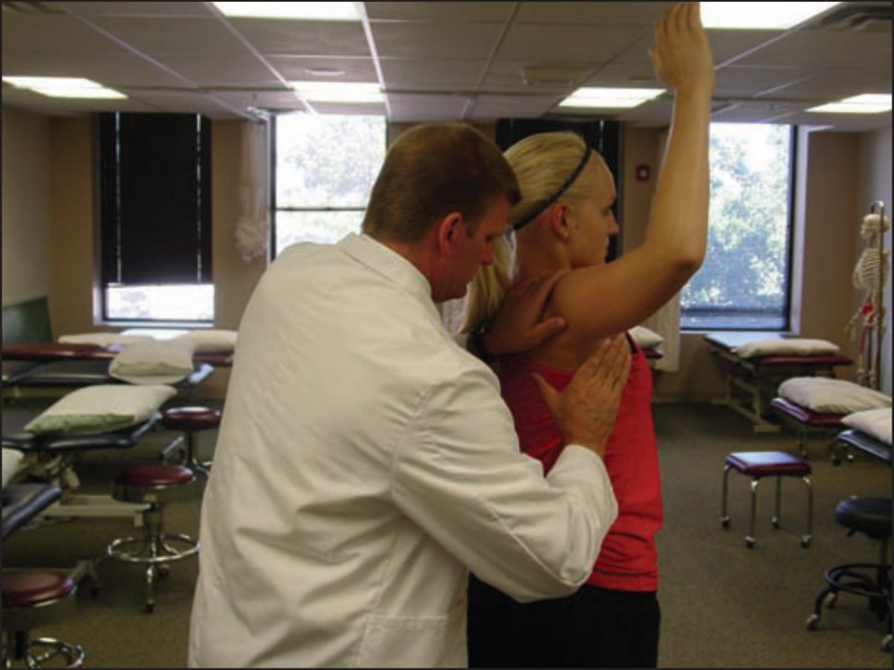
🔖图8：外展外旋位做肩胛辅助试验，模拟投球和发球的挥臂动作
在外展外旋位做辅助时，肩胛后倾增加 7°，疼痛评分下降 56%。
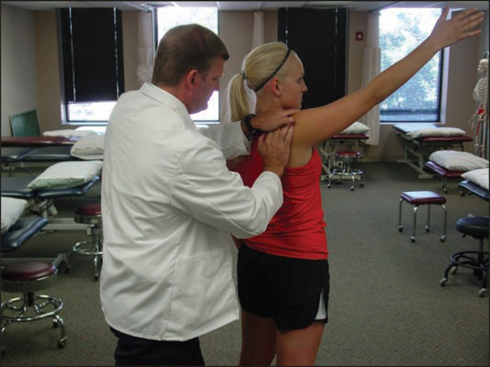
🔖图9：肩胛平面上举时做肩胛后缩试验
施加后缩时，肩胛后缩增加 5°、后倾增加 12°、内旋减少 8°，盂肱关节处于更有利于过头动作的位置。这个试验也很适合用来给患者演示：近端稳定了，远端才有力。
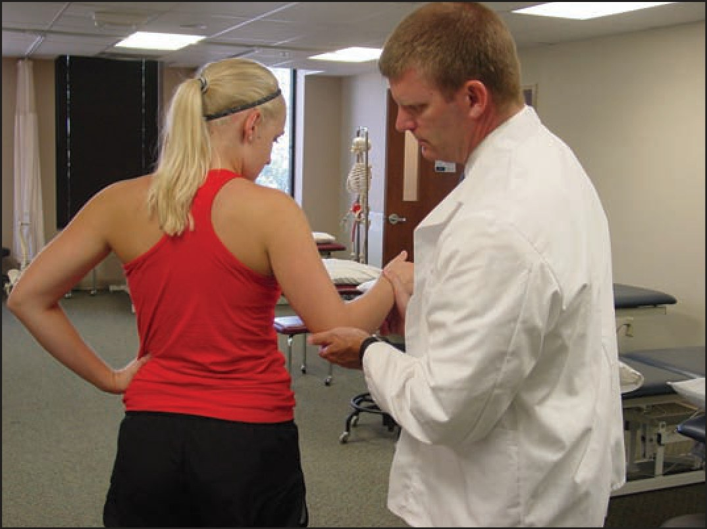
🔖图10：肩胛翻转征，提示肩胛动态稳定不足
如果翻转时肩胛还明显下回旋，要警惕副神经损伤导致的斜方肌严重无力。
• 关节位置觉：把肢体放到某个角度、停留后回到起点，再让运动员自己回到那个角度，记录误差；100 名健康男性平均误差 2.7°
• 被动运动感知阈值：需要专门设备，临床较少用
• 疲劳的影响：多项研究显示肌肉疲劳会降低盂肱关节本体感觉，康复中应加入本体感觉训练
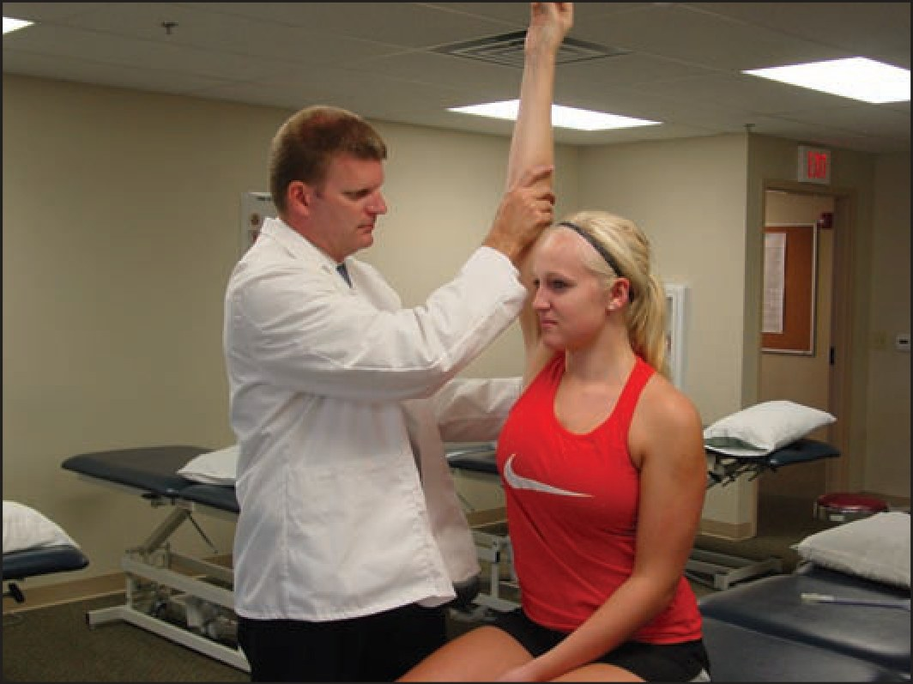
🔖图11：Neer 撞击试验：被动强制前屈
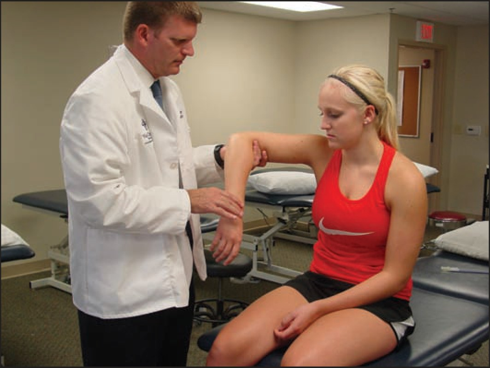
🔖图12：Hawkins-Kennedy 撞击试验：肩胛平面被动强制内旋
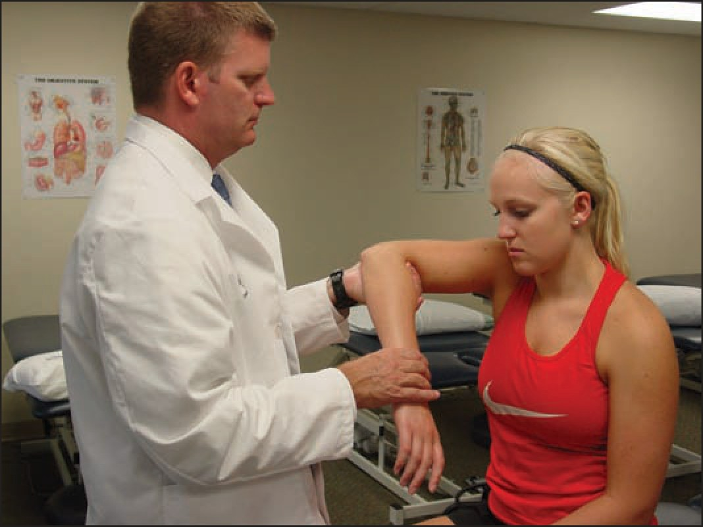
🔖图13：喙突撞击试验：矢状面被动强制内旋
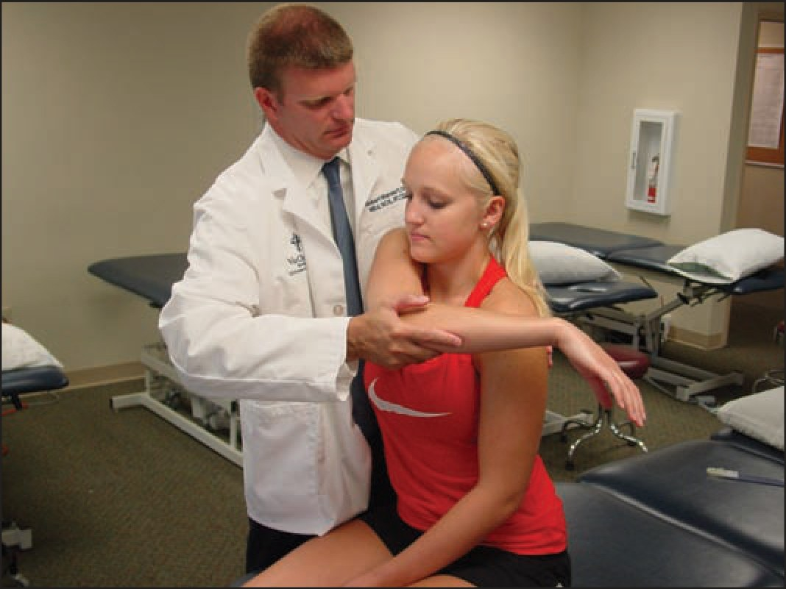
🔖图14：交臂内收撞击试验
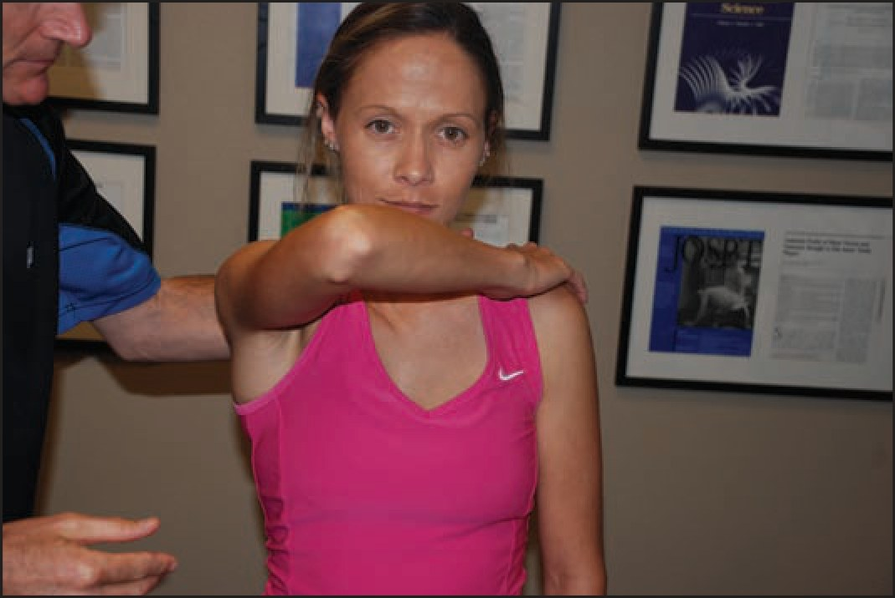
🔖图15：Yocum 撞击试验：主动上举加内旋，评估主动上举时控制肱骨头上移的能力
"They report the pooled specificity and sensitivity of the Neer test to be 53% and 79%, respectively, and for the Hawkins–Kennedy impingement test 59% and 79%."
"他们报道 Neer 试验的合并特异度和敏感度分别为 53% 和 79%，Hawkins-Kennedy 试验分别为 59% 和 79%。"
怎么理解这些数字：似然比 ≥ +2.0 的阳性结果，能明显提高患病可能；≤ 0.5 的阴性结果，能明显降低患病可能。没有哪一个撞击试验单独就足够准，要把多个试验组合起来，并区分原发性、继发性和内撞击。阳性的体位也提示康复训练中应避免哪些姿势。
过头运动员的重点，是找出细微的前向不稳。不稳试验分两类：肱骨头移动试验和诱发试验。
• 健康人前向移动平均 7.8 mm，后向 7.9 mm，大约 1:1
• 下向（沟征）平均 10 mm
• 操作要点：先测健侧；手法要稳但不粗暴，让患者放松；用较快的推移动作；同时比较移动量和终末感
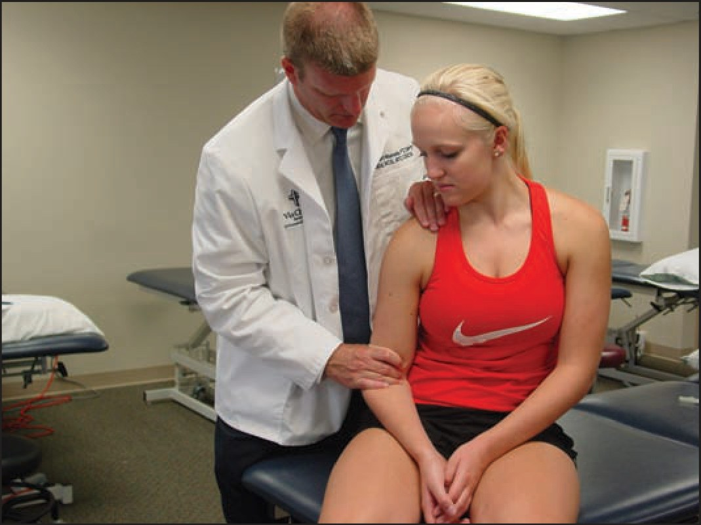
🔖图16：0° 外展位的多向不稳试验（沟征）
坐位，双臂中立内收放在腿上。检查者握住肱骨远端，快速向下牵拉几次。肩峰外侧和肱骨之间出现凹陷即为阳性，主要评估上盂肱韧带和喙肱韧带。下向移动过多，往往预示前后方向也会移动过多。
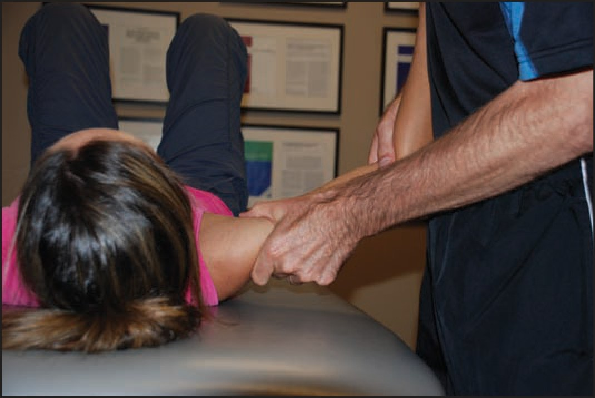
🔖图17：仰卧位前后向负荷移位试验
| 外展角度 | 主要检查的结构 |
|---|---|
| 0°-30° | 上盂肱韧带 |
| 30°-60° | 中盂肱韧带 |
| 90° | 下盂肱韧带（后向推移通常也在 90° 做） |
仰卧更容易放松。由于关节盂有约 30° 的倾角，推移要沿关节线方向，即前内、后外方向，上臂放在肩胛平面。
| 分级（Altchek & Dines） | 表现 |
|---|---|
| Ⅰ级 | 肱骨头在关节盂内移动，不越过盂缘 |
| Ⅱ级 | 越过盂缘，撤力后自行复位 |
| Ⅲ级 | 越过盂缘，撤力后不复位（康复门诊基本见不到） |
"The presence of grade II translation in an anterior or posterior direction without symptoms does not indicate instability but instead merely represents laxity of the GH joint."
"前向或后向Ⅱ级移动但没有症状，并不代表不稳，只是盂肱关节松弛。"
以“肱骨头是否越过盂缘”作为主要判断标准，信度更好；加入终末感分级等其他指标，反而会降低信度。
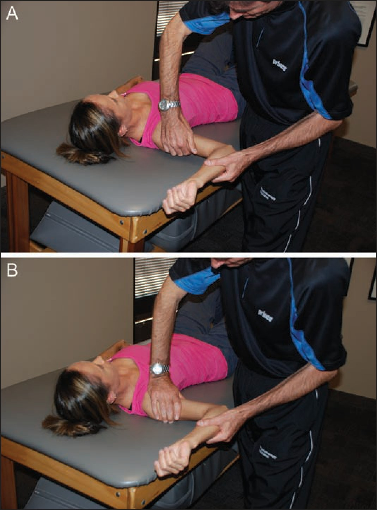
🔖图18：盂肱关节半脱位（A）与复位（B）试验
• 做法：外展 90°、最大外旋，向前推肱骨近端（半脱位），问是否诱发症状；再用手掌向后外方向压住肩前方（复位）
• 阳性：半脱位时出现肩前或肩后疼痛，复位后减轻或消失
• 恐惧感：任何角度推移时出现恐惧，提示隐匿性前向不稳
• 加强版：90° 阴性时，再在 110° 和 120° 外展重复，增加冈上肌腱下面与后上盂唇的接触
• 意义：前痛提示细微前向不稳伴继发撞击；后痛提示后方或内撞击，也可能有后方Ⅱ型 SLAP 损伤
"Reproduction of pain during this maneuver often indicates that the athlete is not able to return to aggressive overhead function due to a decrease in shoulder stabilization and can be used as a clinical test to determine readiness to return to throw by the clinician."
"这个动作诱发疼痛，往往说明肩关节稳定性下降，运动员还不能回到高强度的过头动作，因此可作为判断能否回归投掷的临床检查。"
共 9 分：小指掌指关节过伸、拇指贴前臂、肘过伸、膝过伸（各左右两侧），加站立体前屈双手掌贴地。信度 0.74-0.84。判定为全身松弛的阈值尚无共识，有研究用 2/9，也有用 4/9。它可以帮助判断活动度训练和关节松动的进度。
Itoi 等发现，用来预测肩袖撕裂时，“无力”比“疼痛”更有预测价值。两种体位预测全层撕裂的能力没有差别，都可以用来检查冈上肌。
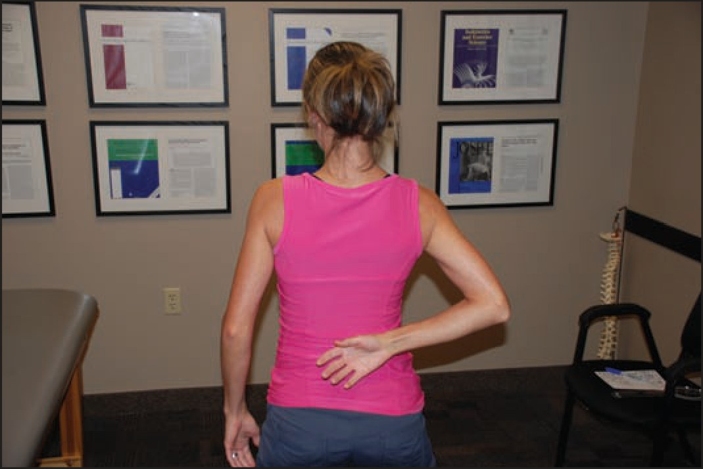
🔖图19：Gerber 抬离试验
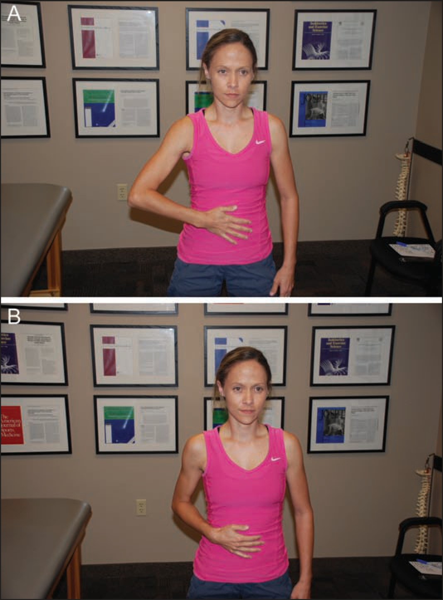
🔖图20：A 拿破仑试验；B 压腹试验
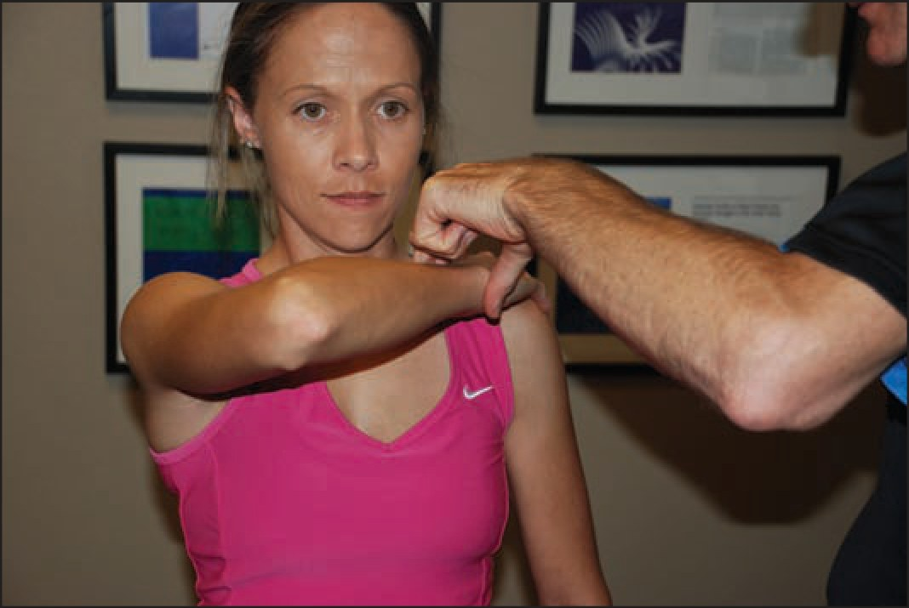
🔖图21：熊抱试验
研究表明三个试验都能较好地分离出肩胛下肌。Yoon 等发现抬离试验对肩胛下肌全层撕裂高度特异，还能发现严重的脂肪浸润。
盂唇损伤是单靠特殊检查最难诊断的问题之一。投球加速期，肩关节外展 90°、外旋时，前向剪切力可达体重的 50%，反复作用就可能损伤盂唇。
• Bankart 损伤：前下方盂唇脱离，见于多达 85% 的肩关节脱位，导致前下方向不稳
• SLAP 损伤：上方盂唇由前到后的损伤，Snyder 分为 4 型（Ⅰ型为磨损，Ⅱ-Ⅳ型有脱离）
• 实验中在 10 点到 2 点位置制造 SLAP 损伤后，盂肱关节抗旋转能力下降 11%-19%，下盂肱韧带前束应变增加 100%-120%
• “剥离”机制（peel back）：外展位极度外旋时产生扭转力，把肱二头肌长头和后上盂唇“剥”下来，投掷运动员多见后方Ⅱ型 SLAP
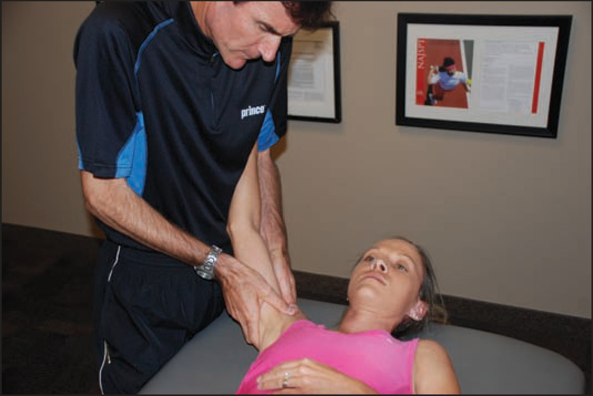
🔖图22：Clunk 试验
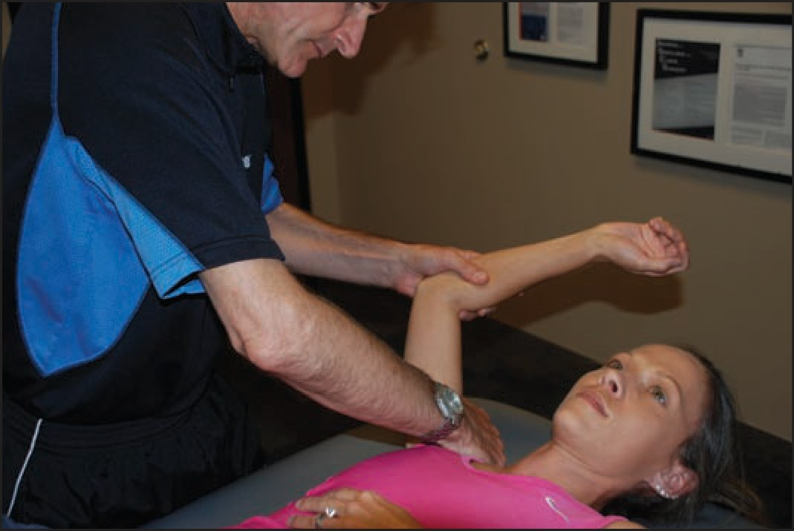
🔖图23：环转试验
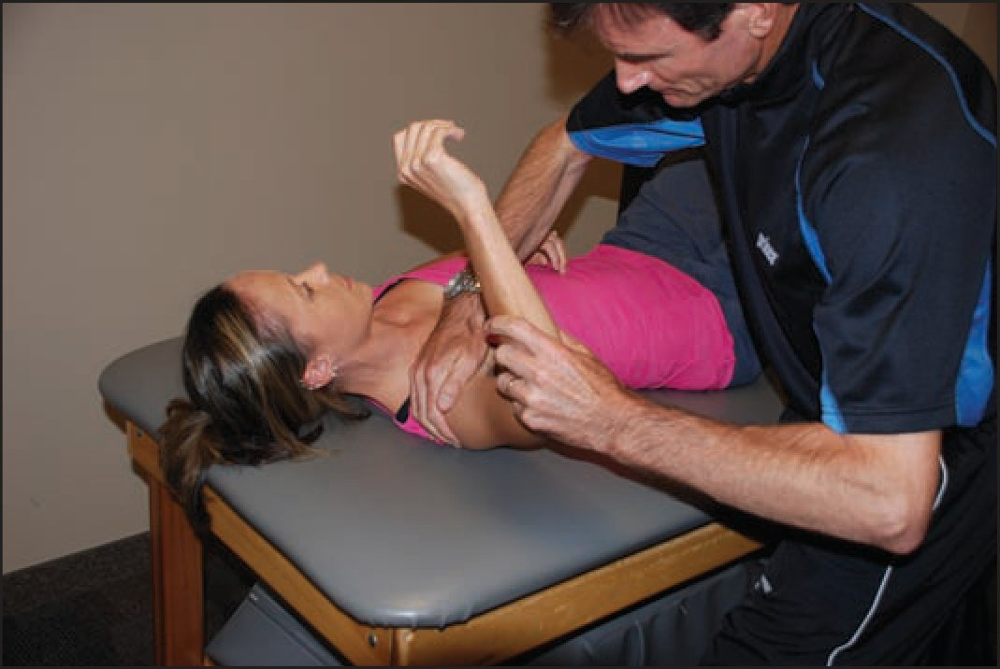
🔖图24：挤压旋转试验
沿肱骨长轴施加挤压，研磨关节盂边缘，试图把撕裂的盂唇碎片夹在肱骨头和关节盂之间，像“研钵和杵”一样。
"Noise generation or a feeling of traversing across the glenoid rim does not indicate a torn labrum and can fool an inexperienced clinician during the interpretation of the exam findings."
"出现响声或越过盂缘的感觉，并不代表盂唇撕裂，可能会误导经验不足的检查者。"
判断阳性主要看是否诱发出患者平时的疼痛，同时记录松弛程度和摩擦感的类型。
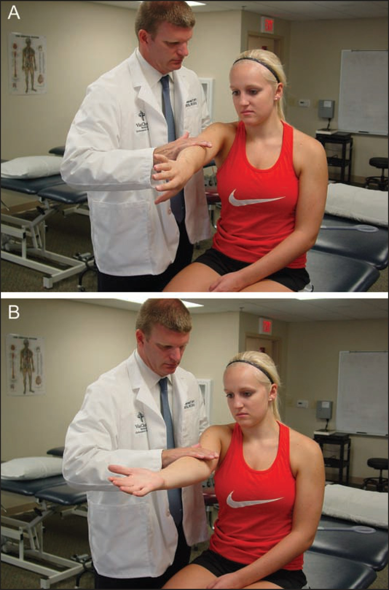
🔖图25：O'Brien 主动挤压试验：A 水平内收加内旋；B 水平内收加外旋
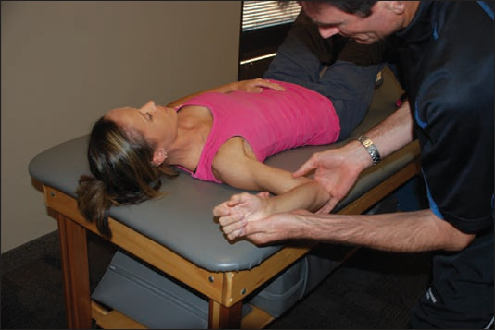
🔖图26：Mimori 试验
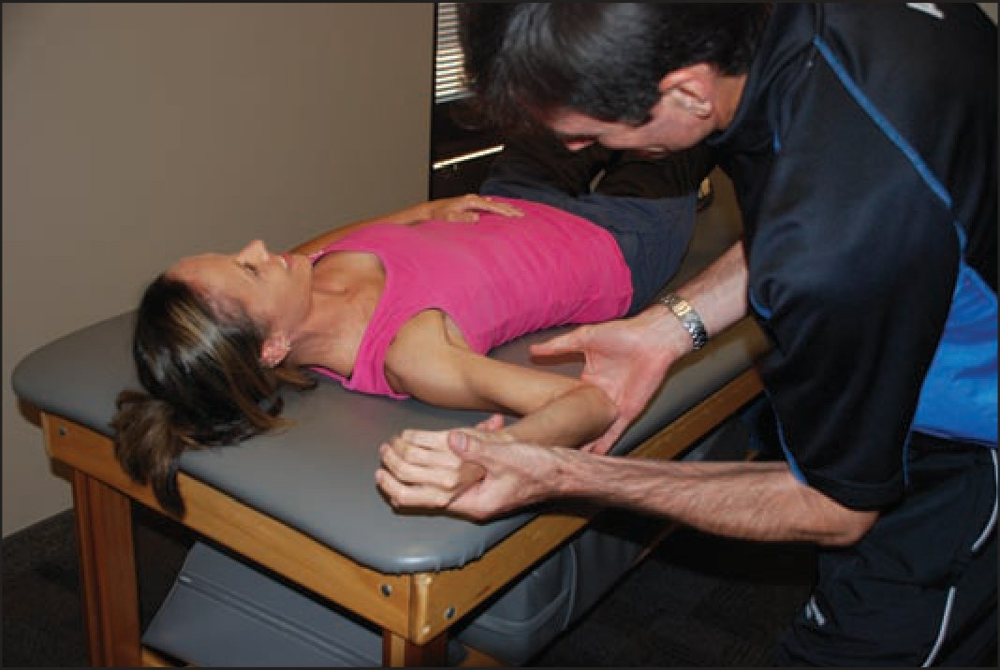
🔖图27：肱二头肌负荷试验
这类试验让患者主动收缩肱二头肌、检查者对抗，通过长头腱牵拉上方盂唇。Speed 试验也属于这一类。
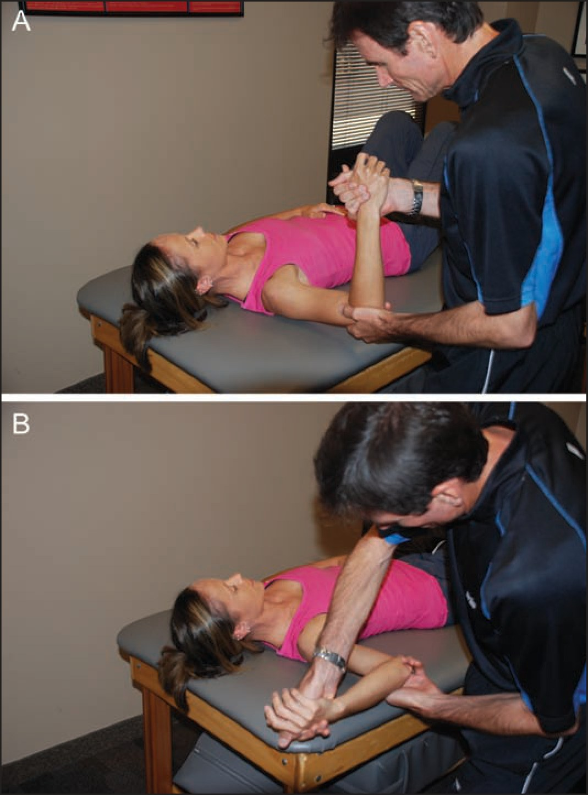
🔖图28：外旋旋后试验
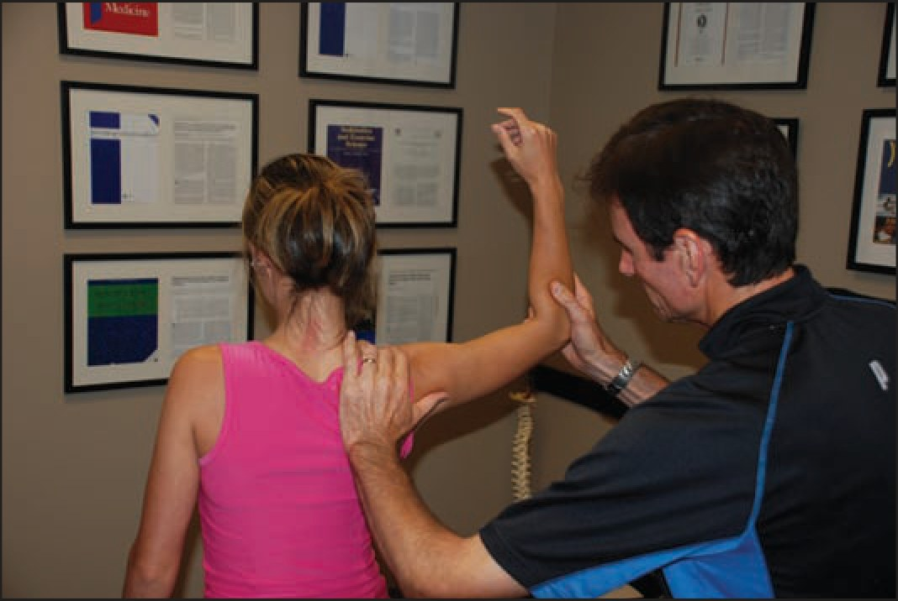
🔖图29：动态盂唇剪切试验
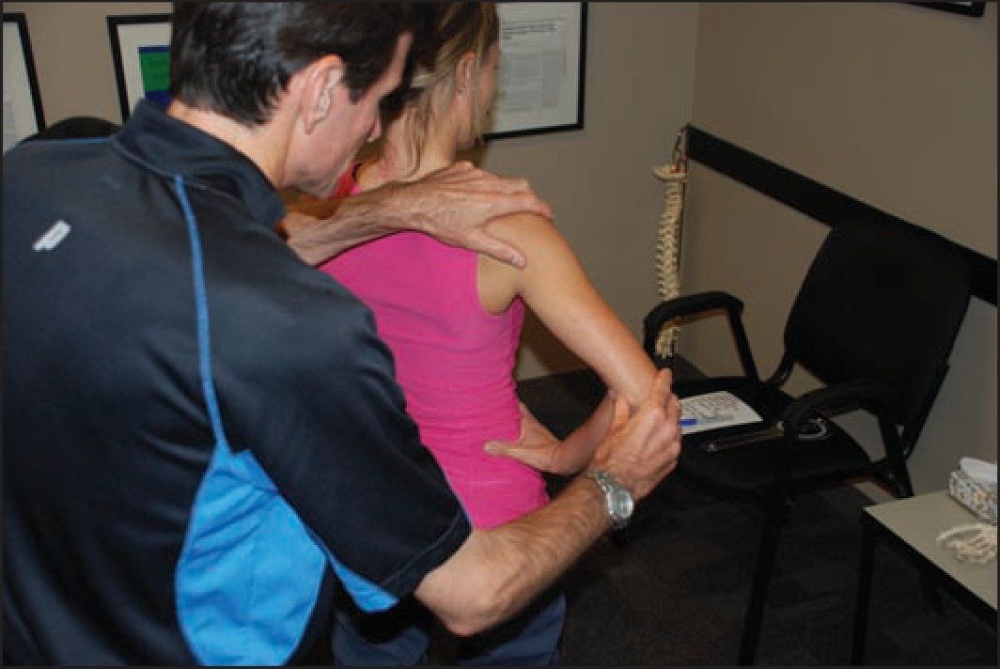
🔖图30：前方和后方滑动试验
外旋旋后试验、动态盂唇剪切试验和 Crank 试验都利用外展外旋位模拟挥臂动作。前方滑动试验则在双手叉腰位用内旋向前上方推，阳性（疼痛和 / 或咔哒声）加上有弹响、卡住、咔哒的病史，对Ⅱ-Ⅳ型盂唇损伤有中等诊断价值。
| 检查 | 诊断准确性（原文引用的综述数据） |
|---|---|
| O'Brien 试验 | 特异度 47%-99%，敏感度 11%-98% |
| 挤压旋转试验 | 报告范围分别为 24%-26% 和 76%-98% |
| 普通 MRI（SLAP） | 敏感度 42%-98%，特异度 71% |
| MRI 关节造影（SLAP） | 敏感度 67%-92%，特异度 42%-91% |
范围这么宽，说明其他研究者很难重复出试验发明者报告的高准确性。未来更有价值的方向，是把多个盂唇试验组合成“试验组”。
▪️值得肯定的部分：
• 覆盖了过头运动员肩关节检查的完整流程，30 张图片几乎每个试验都有示范
• 强调双侧对比和过头运动员的“正常适应”（外旋多、内旋少、TROM 对称），避免过度治疗
• 提出解剖性 GIRD 与病理性 GIRD 的区分，比单纯用内旋缺失判断更合理
• 大量引用诊断准确性数据，提醒读者单个试验的局限
▪️需要谨慎看待的部分：
• 证据级别为 Level 5：叙述性综述，没有系统检索方法
• 原文对敏感度和特异度的解释写反了：特异度应是“没病时试验阴性”的能力（SpPin），敏感度应是“有病时试验阳性”的能力（SnNout），阅读时要注意
• 作者说正文提供了含似然比和预测值的表格，但全文只有表 1（问诊）和表 2（肌力测试），并没有这样的表
• 文章发表于 2013 年，部分试验的准确性数据和 GIRD 的概念后来都有更新
• Kibler 分型、肩胛外滑试验等的信度本身存在争议
挥臂准备期、加速期还是随挥期？疼痛出现的阶段，往往直接指向受伤的结构。再加上球速、控球和器材的变化，问诊就能缩小一大半范围。
内旋少了但外旋相应多了、TROM 对称，是正常适应，不需要强行拉伸。TROM 比健侧少 5° 以上，才是需要处理的信号。
肩胛辅助或后缩一下，疼痛就减轻、力量就增加，说明问题在近端稳定，康复重点就应放在前锯肌和下斜方肌。
没有一个撞击试验或盂唇试验单独就足够准。固定一套自己的试验组合，每次都按同样的顺序做，并且先做健侧。
这个试验仍然诱发疼痛，说明肩关节动态稳定还不够，运动员还不适合回到高强度的投掷或发球。
"A consistent systematic approach to the examination process will facilitate less risk of missing a diagnosis."
"始终如一的系统检查流程，能降低漏诊的风险。"
① 问诊：疼痛阶段、不稳感、弹响、球速变化，排除颈椎
② 观察：双手叉腰位看肩低、萎缩、肩胛位置
③ 活动度：90° 外展位测内外旋，重点看 TROM
④ 肌力：固定肩胛，注意疼痛的影响
⑤ 肩胛：分型观察 + 辅助、后缩、翻转试验
⑥ 特殊检查：撞击、不稳、肩袖、盂唇，组合使用
欢迎关注骨科康复小黄公众号，获取更多物理治疗的专业知识！
📄参考文献：
Manske R, Ellenbecker T. Current Concepts in Shoulder Examination of the Overhead Athlete. Int J Sports Phys Ther. 2013;8(5):554-578. PMCID: PMC3811732.
文中图片均来自原文，仅用于学术交流。